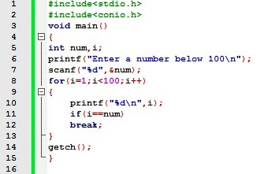
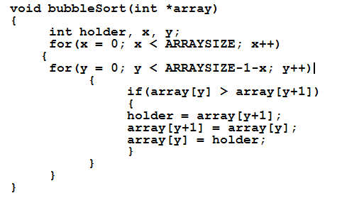

C Language
C is a general-purpose, imperative computer programming language, supporting structured programming, lexical variable scope and recursion. By design, C provides constructs that map efficiently to typical machine instructions, and therefore it has found lasting use in applications that had formerly been coded in assembly language, including operating systems, as well as various application software for computers ranging from supercomputers to embedded systems.
C was originally developed by Dennis Ritchie between 1969 and 1973 at Bell Labs, and used to re-implement the Unix operating system. It has since become one of the most widely used programming languages of all time, with C compilers from various vendors available for the majority of existing computer architectures and operating systems. C has been standardized by the American National Standards Institute (ANSI) since 1989 (see ANSI C) and subsequently by the International Organization for Standardization (ISO).
Some Screenshots
 
Simple functions are:
- printf
- scanf
- strlen
- puts
- gets